Parcours candidat
De la découverte des biens à la confirmation du rendez-vous de visite.

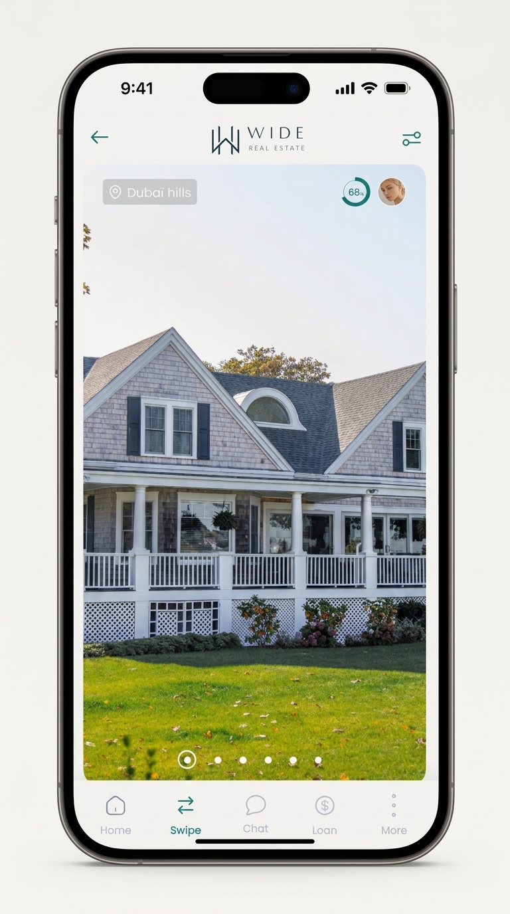
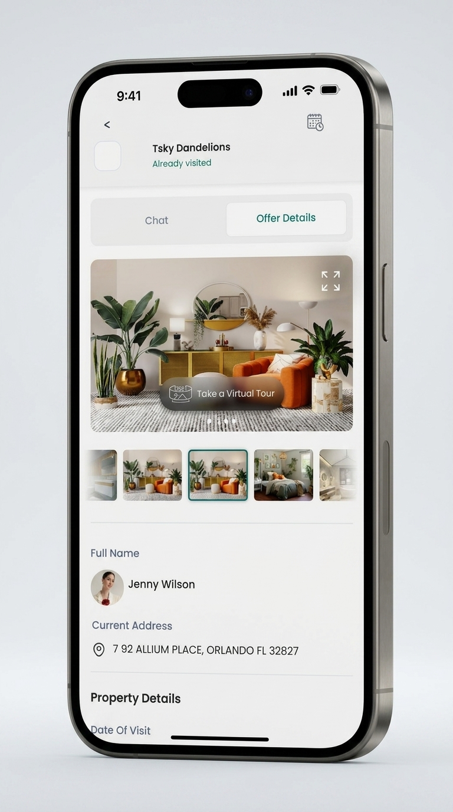
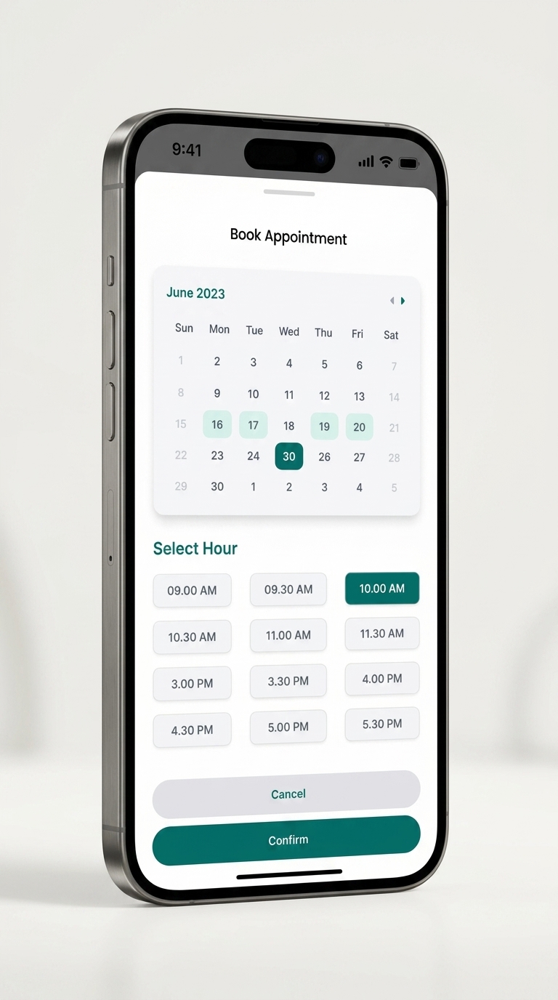
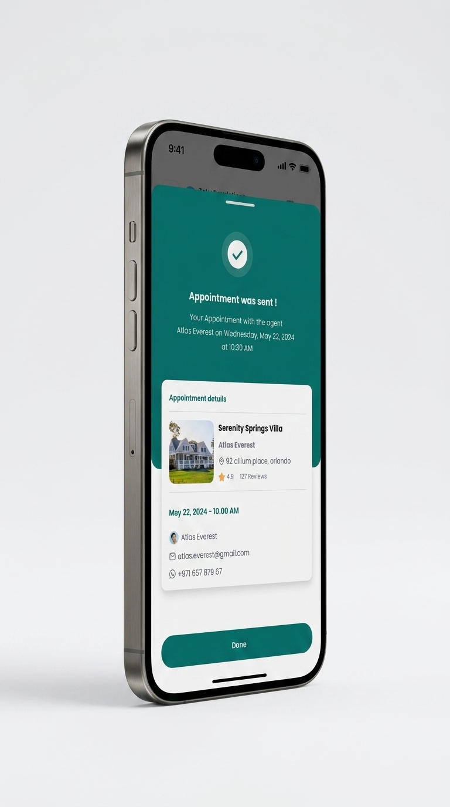
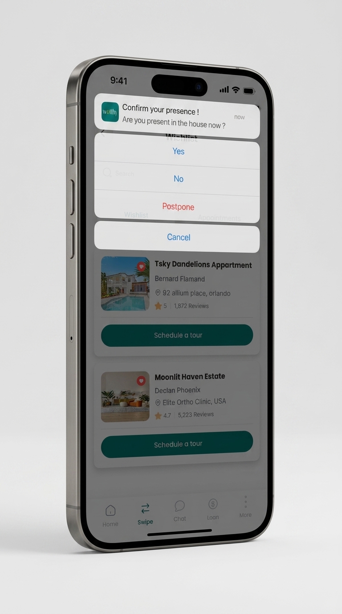
Conception de bout en bout d'une application mobile immobilière — recherche de biens par swipe, prise de rendez-vous, messagerie avec les agents, simulation de prêt — ainsi que du dashboard back-office qui l'alimente.
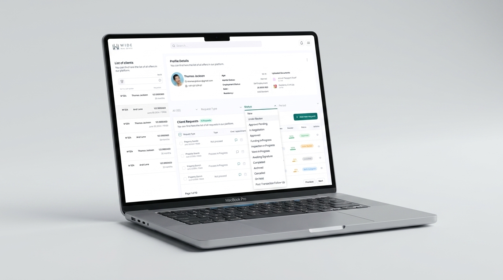
Les futurs acquéreurs jonglaient entre plusieurs canaux — annonces, agences, banques — sans vue d'ensemble sur leur avancement. Côté agents, le suivi des rendez-vous et des dossiers de prêt se faisait à la main, sans outil centralisé.
Plutôt que d'enchaîner les écrans, j'ai construit une bibliothèque de composants réutilisables (cartes bien, badges de statut, bulles de chat, boutons d'action) afin que les équipes produit puissent assembler de nouvelles fonctionnalités sans repartir de zéro.
Chaque parcours — recherche, visite, financement — a été prototypé et testé avant transmission au développement, pour vérifier la faisabilité technique en amont.
De la découverte des biens à la confirmation du rendez-vous de visite.





Chaque bien devient une conversation : messagerie intégrée et suivi des rendez-vous en un seul endroit.
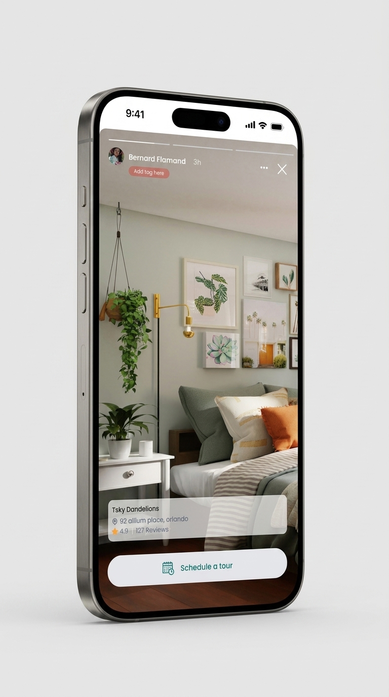
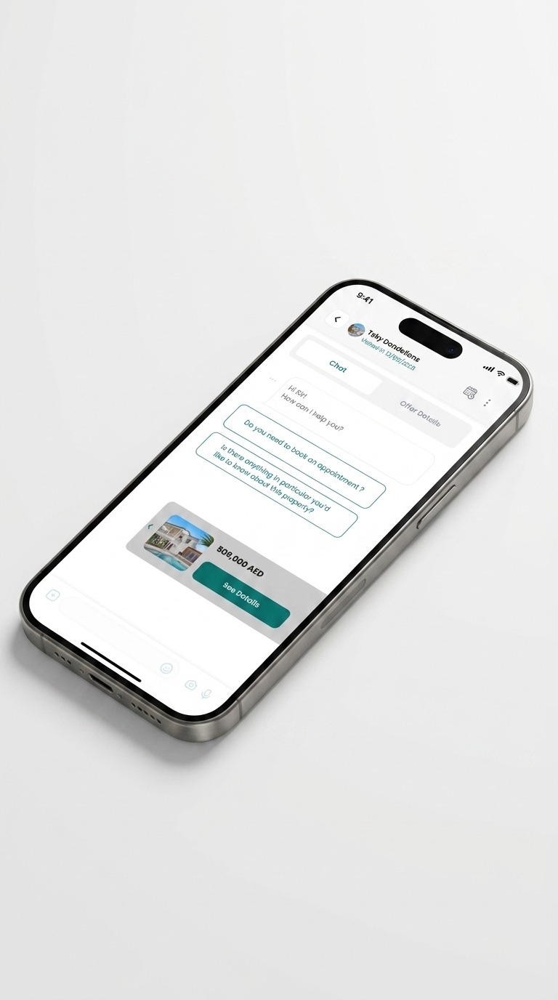
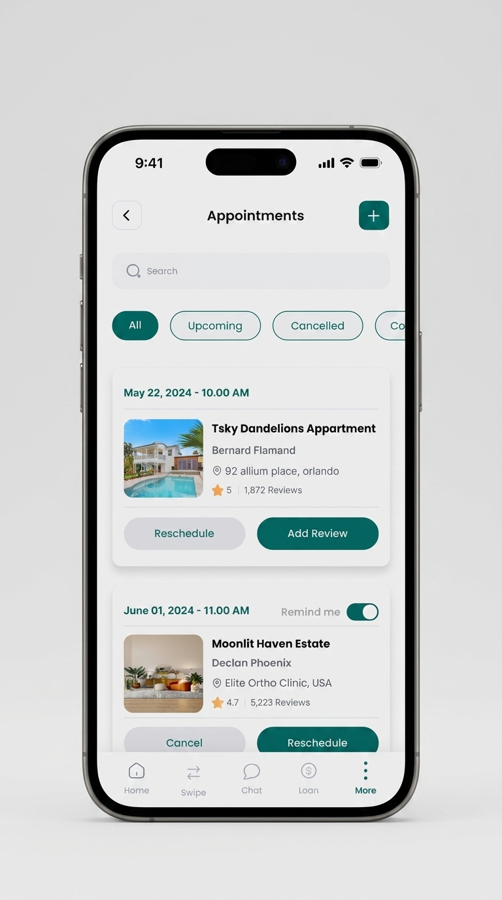
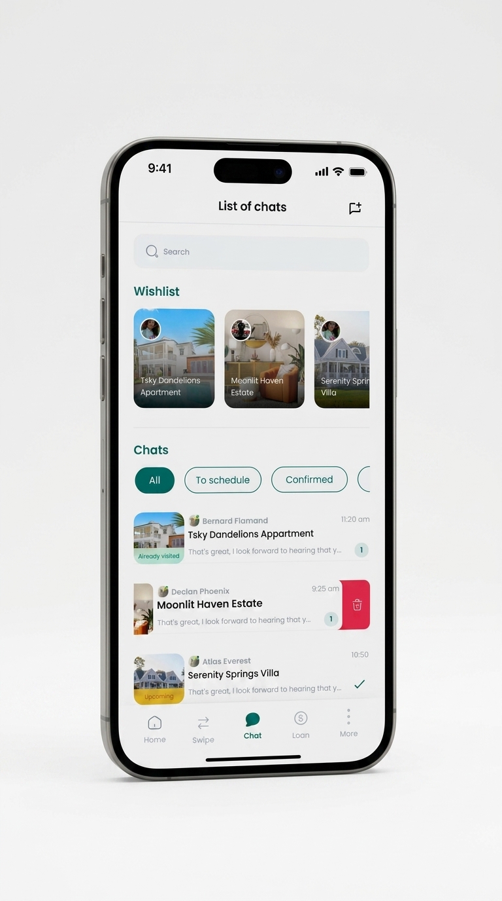
Le volet financement laissait les candidats démunis face aux offres bancaires. J'ai conçu un comparateur qui met en regard coût total, taux et mensualités, jusqu'à la signature électronique du dossier.
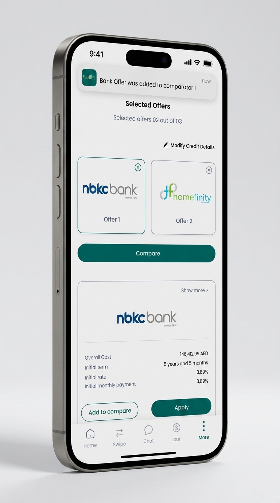
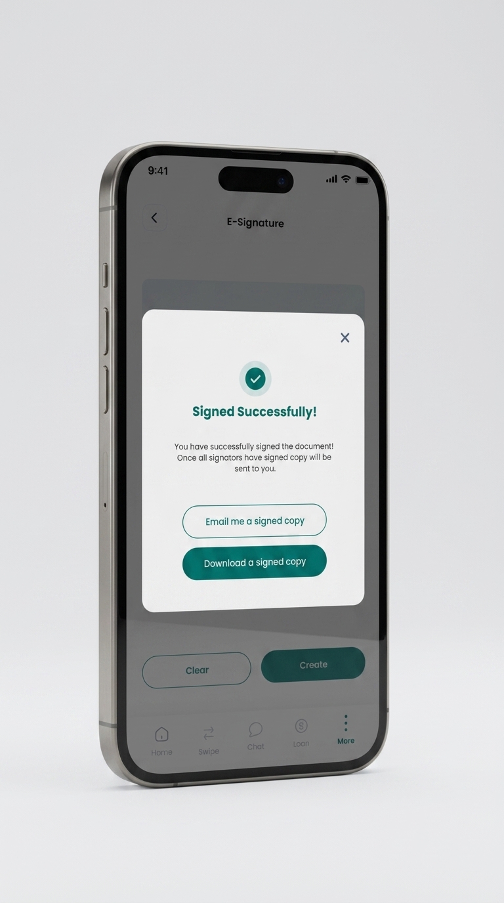
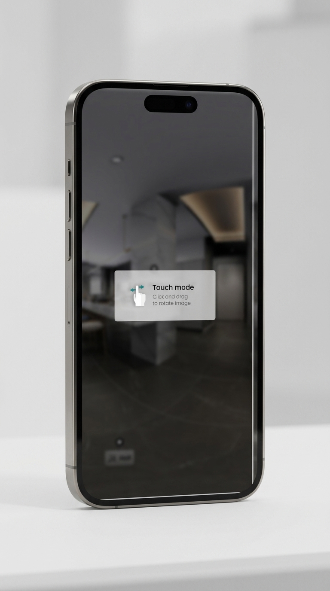
Côté agence : centraliser les fiches clients et le statut de chaque dossier, de la première visite à la signature.
composants UI réutilisables documentés pour les équipes produit
design system partagé entre l'app mobile et le dashboard back-office
des parcours clés prototypés et testés avant développement